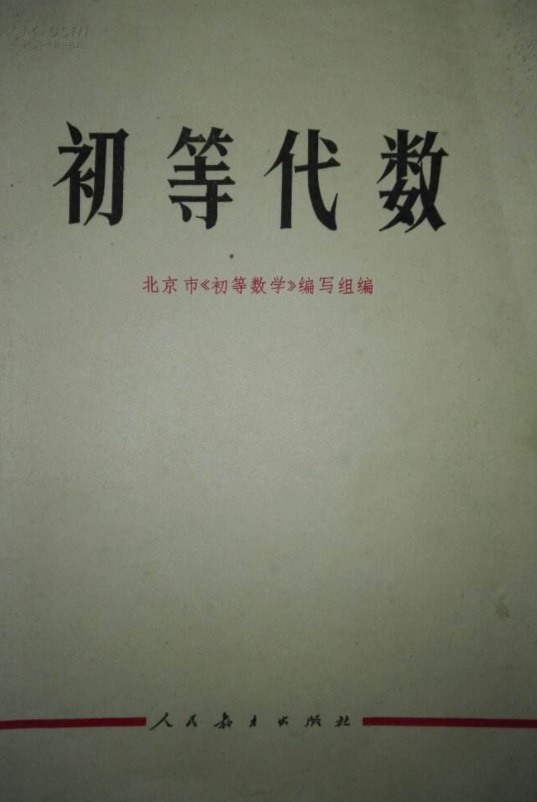
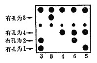
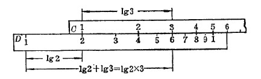

时代特征鲜明，建设时期。想起小学初中的教材中的种果树离现实远了，电子器件等也远，而书中的例子感觉和书一样是历史中的。书中意识形态鲜明，纯数学+紧密贴合实际，间或有富有哲理的语句，同时贴合时政要闻。

【1】【数】
正负数和数轴，有理数加法、减法、乘法、除法。==》平均数。
乘方，幂的运算，零指数和负整指数。开方==》实数，无限不循环小数是无理数。
进制，二进制与十进制之间互相转化。二进制的电路实现。

纸带很像算盘
【2】【整式】
用字母表达一种数量。单项式，多项式，次数。
加法，减法，乘法，除法。
公式：平方和公式，平方差公式，立方和公式。
$a^3 \pm b^3 = (a \pm b)(a^2 \mp ab +b^2 )$
因式分解：提公因式，利用公式，十字交叉试算，分组分解。
多项式相等，恒等变形，待定系数法。
【3】【分式】
分式，约分，真分式，假分式，通分。加减乘除。
根式运算与化简。分数指数幂。
【4】【方程】
题目中提取变量，列方程。
一元一次方程，二元一次方程组。消元法，行列式解法，增广矩阵的高斯消元法。初等变换不改变方程组的解。每次消去一个维度，然后回代。直角坐标系。二元一次方程组解的意义是交点坐标。
一元二次方程，配方法，公式法，因式分解法。根的判别式，虚根（例如弹簧-质点模型中虚根表示振动），复数，根的几何意义是与y轴交点的横坐标。
例如分解因式$3x^2+2x+1$,先求得根为$\frac{-1 \pm \sqrt{2}i}{3}$，然后写出分解。
分式方程、根式方程进行同解变换时可能产生增根。
【5】【不等式】
一元一次不等式，二元一次不等式组。一元二次不等式，图像解法，根据根的判别式和一元二次方程的根，因式分解。
线性规划，$\min f(x,y)$
【6】【对数】
对数表，反对数表。$\log {ab} = \log a + \log b$
$A =\sqrt[5]{7} = 7^{0.2}, 7=10^x \rightarrow x = lg7 = 0.8451$
$A = 10^{0.8451 \times 0.2} = 0.1690$
换底公式$\log_a {b} = \frac{\log_c b}{\log_c a}$
物体自然冷却，大气压力和高度，电容放电，$y = a_0e^{-kt}$

乘除计算尺
【7】【数列】
等差，等比，求和公式，乘公比错位相减法。
求$\sum {k^2}$, 思路是
$k^2 = \frac{1}{3}((k+1)^3 - k^3 -3k-1)$
数学归纳法，优选法，黄金分割比0.618，在$[0,a]$之间寻找$x^2 = a(a-x)$， 解是$\frac{-1+\sqrt{5}}{2}$
令$a=1$, $x = \frac{1}{1+x}$
令$x_0 = 1, x_{n+1} = \frac{1}{1+x_n}$
分数数列${s_{n} =\frac{a_n}{b_n}, a_0 = b_0 = 1, a_{n+1} = b_{n}, b_{n+1} = a_{n} + b_{n} }$ 趋近于0.618。
【8】【排列组合，概率】
全排列，阶乘，$A^i_j = \frac{j!}{(j-i)!}$
组合，$C^i_j = \frac{A^i_j}{i!}$
二项式定理。
必然事件，偶然事件。事件之间的相容性。等可能事件。
正交试验，三因素二水平，$2^3$型试验。
解决的问题是：确定影响因素的主次，选择试验指标最优的水平搭配。三级及以上交互作用、某些二级交互作用往往不考虑以简化计算。
$L_p(m^n)$，n个因素，每个因素m种水平，一共需要试验p次。
水平不齐时，把水平少的重复几次，拟水平法。